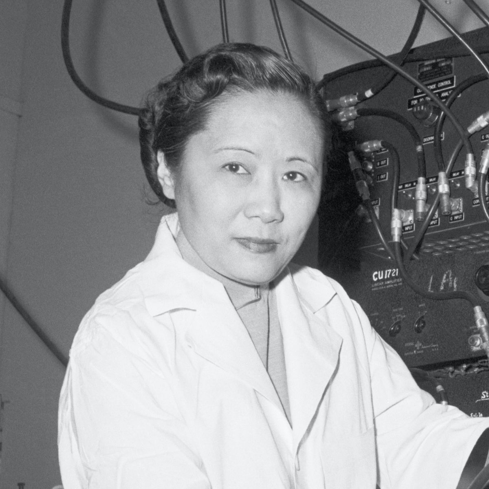
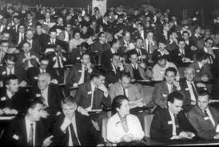

Un combat féministe:

Premièrement Chien Shiung Wu est née le 31 Mai 1912 à Shangai et décédée le 16 février 1997 à New York. Elle est aussi surnomée Marie Curie chinoise. Elle a deux frères, elle mène une enfance heureuse en compagnie de ses parents, Wu Zhong-Yi et Fan Fu-Hua. De nationalité chinoise et américaine elle épouse Luke Chia-Liu Yuan et ensemble ils ont un fils nommé Vincent. Elle va à l'école primaire de Ming De, une école de filles fondée par son père. En 1923, à l'âge de onze ans , elle quitte sa ville natale pour étudier à l'école normale pour femmes de Suzhou. En 1929, elle intègre l'université nationale centrale de Nankin puis, elle travaille comme assistante à l'université de Zhejiang. Elle devient chercheuse à l'institut de physique de l'Academia sinica. En 1936, elle part aux Etats-Unis pour passer son doctorat. En 1940, elle obtient son doctorat à l'université de Berkeley. Ensuite, elle part enseigner au Smith collège, à l'université de Princeton puis à l'université de Columbia. Elle contribue au projet Manhattan qui est un projet de recherche du gouvernement américain dont l'objectif était de produire une bombe atomique au cours de la seconde guerre mondiale. Wu aide à développer le processus de fission des atomes d'uranium pour les transformer en isotopes, c'est une technologie déterminante dans la création de la bombe larguée sur Hiroshima et Nagasaki.
Elle a reçu plusieurs prix:
En 1958, elle est élue membre de l'Académie National des Sciences des Etats-Unis et lui est attribuée le prix de la Research Corporation.
En 1960, elle obtient le prix de la réussite American Association of University Women.
En 1978, elle est la première femme et première personne à recevoir le prix wolf de physique.
A partir de 1975, elle est la première femme à devenir présidente de la Société américaine de physique.
En 1957, Lee et Yang, ses camarades recevront le Prix Nobel pour la découverte du projet Manhattan en 1940 mais Chien Shiung Wu ne le reçevra pas.

Chien Shiung Wu raconta qu'elle s'élèva contre les discriminations sexistes car à l'époque, la physique est dominée par les hommes et les femmes sont donc largement exclues de ce domaine ou bien reléguées dans des rôles de faire-valoir.
Elle a aussi subit des discriminations raciales.
Reportage sur la vie de Chien :
animation de la vie de Chien Chiung Wu:
Enfin, Chien Shiung Wu a écrit un livre en 1965 qui reste une référence en physique nucléaire.